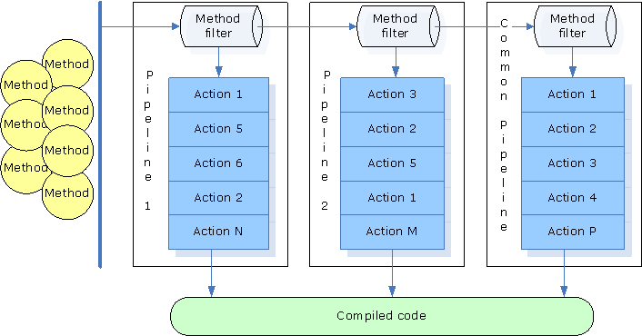
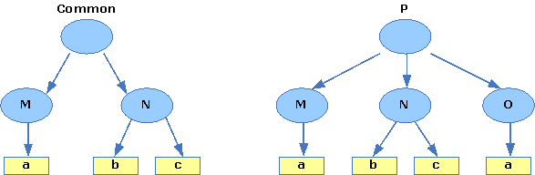

| Version | Version Information | Date |
|---|---|---|
| Initial version | Sergey Ivashin, Svetlana Konovalova: document created. | October 30 , 2006 |
The document is a comprehensive description of the pipeline management framework that provides complete control over just-in-time compilation process through the Java* property mechanism. The description covers the PMF application to the command-line interface and to the Jitrino logging system.
PMF is introduced in the Jitrino component description, whereas the current document gives details on its internal design and specifics. The current document adds examples and usage instructions to the general definition of PMF given in the component description.
The target audience for the document includes a wide community of DRLVM developers interested in understanding Jitrino internals and in improving them. The document assumes that readers understand the concepts of PMF and just-in-time compilation.
This document uses the unified conventions for the DRL documentation kit.
The document contains the detailed description of the Jitrino pipeline management framework (PMF). For a high-level PMF overview, refer to the Jitrino document.
This section contains a detailed description of the PMF key elements.
The pipeline is a sequence of steps representing the compilation process for a set of methods. You can create several pipelines for a single JIT, targeting each to compile a particular set of methods. Each instance of the JIT compiler has one common pipeline, which has an empty method filter. Thus, the common pipeline is applied if a compiled method matched no method filter of other pipelines. For more information on the common pipeline, refer to the Initialization section of the current document.
The method filter is used to choose a
particular pipeline for a method being compiled. Filter
elements make up a filter expression, as follows:
<class_name><method_name><
method_signature>.
Any or all of these elements can be blank. If all
elements of a filter expression are empty strings, the
filter is empty. Empty filters are used in the
compilation of a common pipeline.
The pipeline step is a pipeline element that stores a reference to an action object and its full name. In the pipeline definition a step is represented by its textual name.
The action is an object representing a
certain independent transformation of compiled code.
Each action must be declared as a subclass of the
Jitrino::Action class. Therefore, all
actions have a common set of properties and methods,
namely:
name property used to assign a
unique name to each JIT actioninit() and
deinit() methods used to
initialize and
de-initialize the
JITcreateSession() method used to
create
SessionActionNote
Actions do not have the
run() method and cannot be called directly
in the pipeline. The SessionAction object
is used instead.
The system creates Action objects once
per JIT execution and uses them to store data between
compilation sessions.
A SessionAction object created by PMF
to transform code in a particular compilation session.
SessionAction must be declared as a
subclass of the Jitrino::SessionAction
class, which has the following methods:
getAction() method to get the
reference to the parent Action
objectrun() method to do the work
for the action objectInstances of SessionAction are created
at the start of method compilation and destroyed at the
end of compilation. In other words, they are created
and destroyed every time when a pipeline with the
corresponding action is selected for method
compilation. Therefore, no data can be saved in this
object between compilation sessions.
The IAction class is a common ancestor
of the Action and
SessionAction classes, which contains
service methods that may be accessed from both child
classes; for example, argument processing methods or
methods for obtaining a reference to the corresponding
pipeline.

Figure 1: The Role of Pipelines in the JIT Compilation Process
Figure 1 demonstrates the role of pipelines in the JIT compilation process.
When using the PMF implementation, please note the following:
The common pipeline is created at the JIT initialization. All other pipelines are created just before their first use. Therefore, an optional pipeline is only initialized when a compiled method matches its filter.
During pipeline creation, the compiler iterates over all its
steps. For each step, the compiler creates an instance of the
referenced Action object and calls the
Action::init() method. At this point, all action
parameters are available and the Action::init()
method can use any of the IAction::getArg methods
to retrieve action parameters. For efficiency purposes,
parameters should be processed at the initialization phase, not
during compilation of each method.
Note
You can call the
IAction::getArg method from
SessionAction::run() during compilation of a
method, but it is a less effective way of parameter processing.
The SessionAction object has access to its parent
Action object and therefore, can access data
prepared during the initialization phase.
At this stage, the compiler selects the pipeline for the given method using the filter expression in the method filter and proceeds to compile a method. If the method matches several filters, then the pipeline with the longest filter expression is selected, that is PMF always chooses the filter with more characters in its expression. PMF prohibits creation of different pipelines with the same filter expression.
To compile the method, JIT executes the selected pipeline:
iterates over all its steps, creates a
SessionAction object for each step, calls the
run() method in each object, and destroys it.
At the JIT de-initialization phase all created pipelines are
destroyed. The Action::deinit() method is called
for every step in a pipeline during its de-initialization.
The command-line interface is based on system properties defined by "property = value" relations. At the initialization phase, all properties are stored in the table of VM properties. Depending on the configuration mode, VM can create several JITs. In this case, each JIT reads this table and selects properties independently; therefore, different JITs have different property sets.
The general form of the JIT command is the following:
-XX:jit.<JIT>.<pipeline>.<parameter>=<value>
Where
-XX:jit. is the mandatory prefix enabling
JIT commands selection from VM commands.
Note
The Jitrino command-line interface ignores all commands that do not start with this prefix.
<JIT> specifies the JIT name.
Note
JITs are created by
Execution Manager (EM) using
information from the command line and/or
execution manager configuration
file.
<pipeline> specifies the
pipeline name.<parameter> and
<value> are used to construct one
of the three available basic commands:
filter definition,
path definition and
argument
definition.Both <JIT> and
<pipeline> elements define the
command scope in the following way:
<JIT> element is
omitted, the scope of the command consists of all existing
JITs.<pipeline> element is
omitted, the scope of the command consists of all pipelines
existing in the specified JIT.<JIT> and
<pipeline> are omitted, the scope
of the command consists of all pipelines of all JITs.Commands can be specified on the command line or in the EM
configuration file. Most important commands are usually placed
in the
EM configuration file, so Jitrino can be used
without any commands on the command line.
The order of commands on the command line and in the external file is not significant.
Another way to deal with a set of commands is to store it in a command file and read this file with a special read command:
-XX:jit.read=<command filename>
Note
Write commands in the command file without
the prefix -XX:jit. The read command
itself can be used in the command file. The command file can
contain empty lines and comment lines starting with
# or //.
For information on the general command line syntax specification, refer to the Appendix.
To control the JIT compilation process, PMF uses path definition, filter definition and argument definition commands.
A pipeline can be described as an ordered set of terminal leafs of a path tree. The tree is a purely abstract concept introduced to describe the pipeline construction process. Each non-terminal node of the tree is called a path and defined by the following path definition command:
-XX:jit.<JIT>.<pipeline>.path.<name>=<child1>,<child2>,...
The given command introduces a node with the specified name and enumerates all its direct descendants - children. If a child is a terminal node, it is treated as the name of the action; if not, then the child must be another path.
For each pipeline, define one path with the <name> element omitted, which is called the root path. Each path must have a unique definition.
Each action in the pipeline has a unique full name consisting of all node names from the root to the action itself. The root node is excluded because it has no name. More than one instance of the same action can exist, as long as each instance has a unique full name.
Example
OPT is the JIT name
and a, b and
c are the action names.
-XX:jit.OPT.path=M,N -XX:jit.OPT.path.M=a -XX:jit.OPT.path.N=b,c
The given commands describe the simple path tree:
Figure 2: A Path Tree of a Common Pipeline
The following resulting pipeline is
constructed from the aforementioned tree:
a, b,
c
The pipeline above is common, because it has no method filter. Each action of the given pipeline has a unique full name.
| Action | Full Name |
|---|---|
| a | M.a |
| b | N.b |
| c | N.c |
To define a filter, use the following command format:
-XX:jit.<JIT>.<pipeline>.filter=<class>.<method><signature>
Where
pipeline> is the required
element, which cannot be omitted.class> is the name of the
class constituting the filter expression.method> is the name of the
method constituting the filter expression.signature> is the signature
of the method constituting the filter expression.Note
In the filter definition, the
method and the signature elements
have no period . between them.
You must follow the VM notation for the described elements. You are free to omit some elements, but at least one must be present.
If each of three elements of the method name starts with the corresponding element of the filter expression, the compiled method matches the filter.
Example
-XX:jit.OPT.p.filter=java/lang/Thread.check
The following methods can match the
given filter:
java/lang/ThreadGroup.checkAccess()V
java/lang/Thread.checkGCWatermark()V
java/lang/Thread.checkAccess()V
To continue the example, methods can equally match a less
detailed filter expression, such as
java/lang.check. However, PMF would use the more
specific filter, as described in the
Method Compilation
section.
Example
-XX:jit.OPT.path=M,N -XX:jit.OPT.path.M=a -XX:jit.OPT.path.N=b,c -XX:jit.OPT.p.path=M,N,O -XX:jit.OPT.p.path.O=a -XX:jit.OPT.p.filter=java/lang/Thread.check
The commands above are associated with the following path trees:

Figure 3: An Example of Path Trees for Multiple Pipelines
The following resulting pipelines are
constructed from the aforementioned trees:
(common) a,
b, c
(p)
a, b,
c, a
Note
Path definitions M and
N in the pipeline p are
inherited from the common pipeline, because they were defined
in commands with the pipeline element omitted, but the root
path definition in the p pipeline was
overridden.
To control the actions behavior, PMF supports an action parameters passing convention. The parameter definition command pattern is the following:
-XX:jit.<JIT>.<pipeline>.arg.<full name>.<param>=<value>
Where
The <full name> element defines the parameter scope in the following way:
Example
-XX:jit.OPT.p.arg.a.verify=1
The given command sets the
<verify> parameter for both a
instances, M.a and O.a,
to 1. See Figure 3.
The table below gives several examples of essential commands for the path trees based on Figure 3.
| Command | Omitted Element | Definition |
|---|---|---|
-XX:jit.OPT.p.arg.N.b.verify=2 |
|
The parameter verify
with value 2 is available only to action
b with the full name
N.b in pipeline
p of JIT
OPT. |
-XX:jit.OPT.p.arg.N.verify=2 |
|
The parameter verify
is available for actions b and
c simultaneously. |
-XX:jit.OPT.p.arg.verify=2 |
<full
name> |
The parameter verify
is available for all actions a,
b, c and
a in pipeline
p. |
-XX:jit.OPT.arg.N.verify=2 |
<pipeline> |
The parameter verify
is available for b and
c actions for common and
p pipelines of JIT
OPT . |
The special form of argument definition commands controls the pipeline construction process:
-XX:jit.<JIT>.<pipeline>.arg.<full name>=on -XX:jit.<JIT>.<pipeline>.arg.<full name>=off
Note
In the given form of the argument
definition, the <param> element is absent and only
two values for <value> exist: on and
off.
The off value disables the addressed node and
all its descendants, while the on value enables
the node and its descendants. When constructed, a pipeline does
not include any disabled actions.
Example
To exclude action b
from the pipeline, apply the following command:
-XX:jit.OPT.p.arg.N.b=off
To enable/disable nodes directly in the path definition command, add state characters immediately after the node name, videlicet:
| Character | Corresponding Node Meaning |
|---|---|
|
|
enabled |
|
|
disabled |
|
|
cannot be disabled |
The following command states that c1 is
enabled, c2 is disabled and c3 is
enabled and mandatory:
-XX:jit.<JIT>.<pipeline>.path.<name>=c1+,c2-,c3!
If you try to disable any mandatory node with the
off command, the fatal error occurs.
The logging system supports diagnostic messages from pipeline actions. The VM property mechanism fully controls the system.
A set of log streams is used for logging in Jitrino.
Each log stream has a name. The name of the log stream is not
related to the name of the file, to which the stream is
assigned. The class Jitrino::LogStream is the
program representation of a log stream. This class is similar
to the std::ostream class in the defining operator
<< and other useful methods, such as
printf() and flush(). To obtain the
reference to the underlying std::ostream instance,
call the out() method.
Streams can be accessed by name or by ID. The stream ID can
be obtained from its name by using the
IAction::getLogStreamID() method. For performance
reasons, several most frequently used streams, so-called
known streams, have predefined IDs:
| Stream Name | Stream ID | Output |
|---|---|---|
info |
LogStream::INFO |
The protocol of compilation: JIT and pipeline names, the method name and number, and so on. |
rt |
LogStream::RT |
Run-time output not related to compiled methods. |
ct |
LogStream::CT |
Compile-time diagnostic. |
irdump |
LogStream::IRDUMP |
The dump of internal Jitrino structures for a compiled method. |
dotdump |
LogStream::DOTDUMP |
The dump of internal Jitrino
structures in the .dot format. |
dbg |
LogStream::DBG |
Debug information. |
To enable outputting log information to a stream, enter a command of the following syntax:
-XX:jit.<JIT>.<pipeline>.arg.<full name>.log=<stream1>,<stream2>,...
The left part of the command specifies the name of the JIT compiler and the compilation pipeline to be used, whereas the right part contains the names of the streams that you want to enable. Use the same syntax to enable a custom stream: write an arbitrary name for it and enable the stream with this command.
Note
If program output is directed to a disabled stream, the output is lost and no error diagnostic is produced.
The enabling command follows the general scope of rules: the stream is enabled for the node specified in the command and all its descendants.
Streams defined for different nodes are different streams, though they can have the same name.
Example
The following commands enable two
different streams, though both can be accessed from actions
N.b and N.c by the same
name. The streams can be assigned to different files.
-XX:jit.OPT.p.arg.N.b.log=ct -XX:jit.OPT.p.arg.N.c.log=ct
A method filter can be used to filter logging by package, class or method name. For logging purposes, define an empty pipeline with an appropriate method filter, with this pipeline considered a filter name for simplicity.
Example
The following commands implicitly define
an empty pipeline f for filtering purposes,
defines a method filter for this pipeline and enables logging for
the methods corresponding to f.
-XX:jit.OPT.f.filter=main -XX:jit.f.arg.log=ct
To assign a stream to a file, use the following command syntax:
-XX:jit.<JIT>.<pipeline>.arg.<full name>.log.<stream>.file=<filename mask>
In the given command, the <filename mask> element constructs a filename for the stream. All characters from this mask are copied to the resulting filename literally except macros, which are expanded and the result of expansion is copied to the filename. Below is the list of available macros.
| Macro | Expands To |
|---|---|
%jit% |
The name of the JIT that is compiling the method. |
%class% |
The method class name with
/ changed to _ |
%class_tree% |
The method class name with
/ preserved. |
%method% |
The method name and signature in VM notation. |
%seqnb% |
The global sequential number of the current compilation. |
%log% |
The name of the stream. |
%thread% |
The number of the thread compiling the method. |
In most cases, a program can access the stream file from
concurrent threads, so that all stream operations are
synchronized. However, if a filename mask for the stream
contains the %thread% macro, this file is
thread-specific and access to it is not synchronized.
For all streams, the following default filename mask is used:
log/%jit%/%class%/%method%/%log%.log
For example, for an enabled stream abc with no
assigned filename mask, the log file is in the same directory
with other known stream files, and its name is
abc.log.
All known streams have hard-coded default filename masks, described in the table below. These masks are used if no assignment is made with the corresponding command.
| Stream Name | Default Filename Mask |
|---|---|
info |
log/info.log |
rt |
log/rt.log |
ct |
log/%jit%/%class%/%method%/ct.log |
irdump |
log/%jit%/%class%/%method%/irdump.log |
dotdump |
log/%jit%/%class%/%method%/.dot [special
case] |
Exception
Jitrino writes dot-dumps to the
dotdump stream and produces two .dot
files for each action: before and after execution
of an action. To handle these correctly, the enabled dot-dumper
opens the dotdump stream before executing the
action, writes to the stream and closes it. After executing the
action, the dot-dumper performs the same operation. Each time,
the dot-dumper adds a suffix that indicates the sequence of
actions to the tail of the stream filename .dot,
as follows:
.<action_nb>.<action_name>.before.dot .<action_nb>.<action_name>.after.dot
In the command above, the <action name> element is the name of the action and <action_nb> is the sequential number of the action in the current pipeline.
Names of all open stream files are reviewed at the beginning of method compilation, because the stream file name can depend on the name of the compiled method. If the name is changed as the result of the dependency on the compiled method name, the file is closed and another file with the new calculated name is opened. If the name is not changed, no action is performed. If the same file name is assigned to different streams, a single file is opened and all the assigned streams use it.
If a file used for logging gets closed as the result of filename recalculation, its name is saved in a special list that PMF maintains. For every file opened for logging output, the PMF checks the list. If the name is found, the file is opened in the append mode. This approach prevents from overwriting logging files during a single Jitrino run.
You can use the following commands to control the append/truncate mode for the log files that are opened for the first time:
-XX:jit.<JIT>.<pipeline>.arg.<full name>.log.<stream>.append=true -XX:jit.<JIT>.<pipeline>.arg.<full name>.log.<stream>.append=false
A typical usage pattern for Jitrino action is the following:
<< or printf() method.Example
LogStream& irdump = log(LogStream::IRDUMP);
if (irdump.isEnabled()) {
irdump << "Opt: Running " << getName() << stl::endl;
}
<cmd> : <prefix> <filter def>
<prefix> <path def>
<prefix> <arg def>
<prefix> <file read>
<prefix> : -XX:jit.
<base> : [ <JIT> . ] [ <pipeline> . ]
<JIT> : <name>
<pipeline> : <name>
<filter def> : <base> filter = <filter spec>
<filter spec> : [ <class> ] [ . <method> [ <signature> ] ]
[ <class> ] [ :: <method> [ <signature> ] ]
<path def> : <base> path . <node> = <path items>
<base> path = <path items>
<path items> : <path item>
<path items> , <path item>
<path item> : {<node> | <action >} [{ ! | + | - }]
<node> : <name>
<action> : <name>
<arg def> : <base> arg [ <full name> . ] <arg name> = <arg value>
<base> arg <full name> = {off | on}
<full name> : <path item>
<full name> . <path item>
<arg name> : <name>
<arg value> : <string>
<file read> : read = <file name>
* Other brands and names are the property of their respective owners.